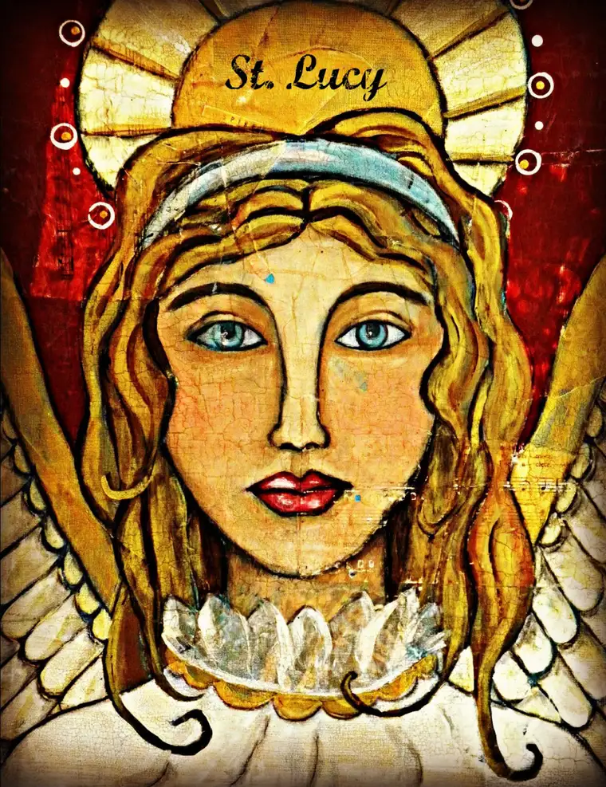
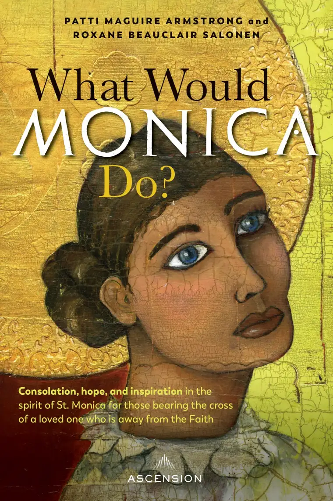
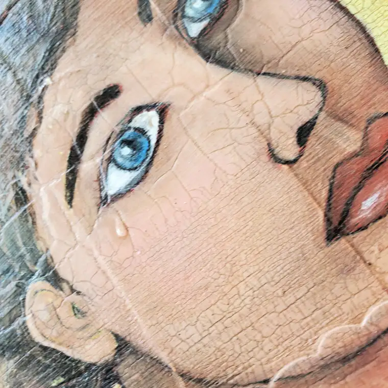

Mixed-media artist Jill Metz hadn’t a thought of creating saints with her art. A Catholic convert who admits to exhibiting a stubborn streak about what she should and shouldn’t do, she hadn’t considered such a possibility.
“When the Lord called me to paint saints, first of all, I knew immediately, ‘I’m not worthy to paint saints,’” she says. “But he worked through that with me. He kept sending signs that that’s what he wanted me to do.”
It was as if God was saying, “You know, I’m more stubborn than you!” she says. “Many times, he worked in my heart that way—through a power struggle. That’s really what it was.”
Eventually, God won the argument. And also, in his customary way, he used a friend to help—a woman who owned a Catholic radio station and asked Metz to paint her a saint for a fundraising auction.
Metz couldn’t say no to that, she says, so she decided to start with the only saint with whom she was acquainted as a fairly new Catholic: Our Lord’s mother, Mary.
“I knew so little about saints, so she had wings,” Metz says, chuckling. “I was painting who I thought was the Blessed Mother, but the Holy Spirit kept saying, ‘St. Lucy.’ I knew nothing about St. Lucy.”
Out of obedience, Metz kept painting. “Of course, she’s the patron saint of blindness, and when you look at my St. Lucy image, she has these big bright eyes. It looks nothing like our Blessed Mother. So, I thought, ‘Okay, this is St. Lucy!’”

Upon finishing it, she handed the work over to her friend, who auctioned it, and decided that was the end of it. “I wiped my hands clean,” she says, adding, “I did what you wanted.”
But it was only a beginning. “A few weeks later, I developed a blindness in my right eye. It came on very quickly,” Metz says. “When I looked out through that eye, I could only see this black blob.”
Metz wasn’t that worried about it, but after a week or two of the dark shape remaining, she became concerned and made an appointment to have it checked out.
“The eye doctor responded pretty aggressively and made an emergency appointment for me to see a specialist,” she says, noting that the second physician was also confounded, wondering if her retina might be detaching.
She was directed to be put on a weekly regimen of steroid shots in the affected eye. “By this time, I was a little freaked out,” Metz admitted. “And on the way home, I got this interior prompting: ‘Don’t forget about St. Lucy.’”
Metz said she had never asked a saint for intercession; the concept was new to her. “I didn’t know we were supposed to call on the saints for help.” But she had a peace come over her at the thought of asking St. Lucy for assistance.
“I told my husband, Ken, ‘I think we’re supposed to ask St. Lucy for help; to pray to St. Lucy.’ So, we started doing that.”
Within a couple of days of praying, the shape changed, Metz says, and by the seventh day, it had turned into “a perfectly shaped heart.” By the 12th day, it had dissolved altogether.
“And that’s how I came to paint saints,” Metz says. “I realized, ‘Okay, Lord, I guess this is what you want from me. So, ever since then, I have done nothing (with my art) other than paint saints.”
Metz says that in her work art working with our heavenly intercessors, she taps into what she calls a “prophetic gift” from the Lord to know which saints to depict, and how.
St. Monica was among her first saint images, and graces the cover of “What Would Monica Do?,” a new book published by Ascension, co-written by me and my friend Patti Armstrong.

Metz says though the tear she added to Monica’s eye is not visible in the book depiction, its placement was very intentional.
“When I was painting and praying with her, and had finished the piece, the Lord had me go back,” even after it was varnished, she said, to add the tear.

“It was like a tear from heaven,” she continues. “The tears of a mother are so precious to the Lord. It’s almost like he stores these things up for the good of the soul. I would say that is something that the Lord laid on my heart—that the mother’s tears are never unheard and are always answered.”
Find more of Metz’s work at her website, TruOriginal.com.
Q4U: What saint do you have a close relationship with, and why?